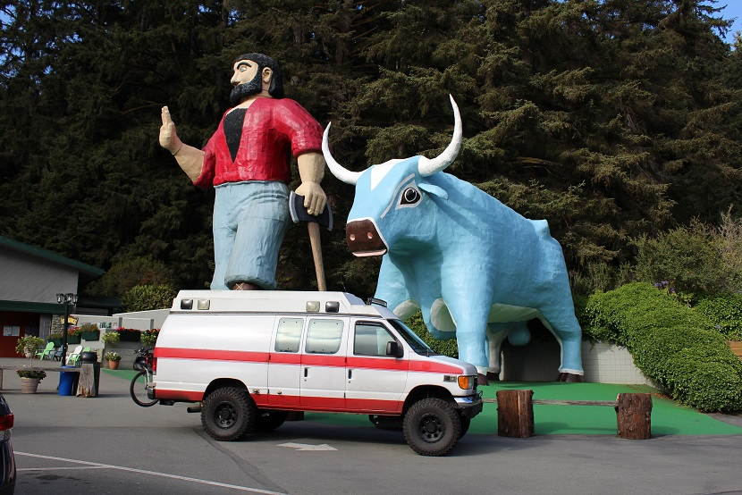

Three years ago my husband and I went to Southern Utah for 10 days to go hiking. Zion National Park is the most beautiful place I have ever seen.
We hiked Angel's Landing which is a terrifying hike up a very narrow ridge where you are basically pulling yourself up with a chain hooked into the
ground at various points. We also hiked the Narrows, which is a river hike. You spend most of the time hiking up river. In August that wasn't so bad
because it was in the mid 90's every day.

Visiting Paul Bunyan and Babe the ox while in California